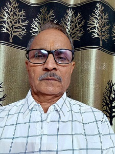

TIMELINE
10 Jan 1959
Date of birth jauary10,1959.
Gajender Kumar Dave s/o late sh.pannalal ji s/o late sh.Labh shanker ji s/o late sh.Moji ram ji
Mother name Kanku davi d/o late sh.bapu lal ji pandya .
Goutam gotra
1975-1976
Mean while in the summer vaction. for three month in each year I have worked at mahi dam site & Road work at Galiyakot Ring wall.
1976-1978
I have taken training of Electrician trade from Industrial training institute (Nation trade certificate).
Meanwhile work at P.C.jain &co. civil contractor .job like a site supervisor.
Exevation of Mahi Right main canal[RMC] , at cheapboard location at Banswara to Mahi dam road.
1978-1979
Posted at 132 kv GSS sagwara as a sub station attendant
1980-1981
Worked at banswara in the B.S.Pandya&co.(mamaji) at canal [TRC]
Exevation Civil work for the post of site supervisor.
1981-1982
worked at mahi dam site as a Electrician.
1982-1983
worked at sidha syntex Ltd. as a Electrician
1983-1984
worked at Modern thread (India)Ltd.Railla Bhilwara as a Electrician
1984-1985
worked at sager spinning Mills udaipur as a Electrician
1985-1986
worked at sidha syntex Ltd for post of Head Electrician
Feb 1986- Jan2019
worded in the Mahi Hydle Project Banswara in the various post as
sub station attandent 2nd
sub station attandend 1st
Junior Engineer 2nd
Assistant Engineer
I have Retiered on 31st Jaunery2019.
Mean while I have studied of Diploma in Engineering from Institution of mechanical Engineers(India)
in between I worked after duty as repairing of radio ,b/w televesion,house wiring,power wiring,color televesion and other electrical appliances
Jan2019- till date
I am reading and working in field of Information technology and Want to become a Coder with the help of Youtube
Python, Django,Javescript,Html,css,php
| IN A NUTSHELL  | |
|---|---|
| Born | Gajendra kumar Dave Januvery 10, 1959 Saroda Sagawara Dungerpur Rajasthan India. |
| Occupation | Woring in verious Engineering fields as technician |
| Parents | late sh.pannalal ji s/o late sh.Labh shanker ji s/o late sh.Moji ram ji Mother name Kanku davi d/o late sh.bapu lal ji pandya . |
| Children | with Bhawana Sonika (b. 1983) Rashmi (b. 1986) Himanshu(b. 1989) Ravi (b. 1991) |